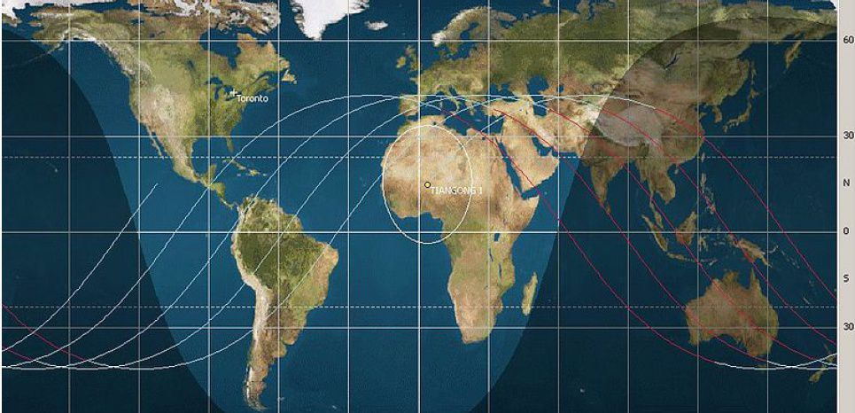

Cette station de 8 tonnes est hors de contrôle depuis 2016. Si on ignore encore où elle va s'écraser, on sait que le danger est (presque) nul.
Tiangong-1, littéralement Palais Céleste-1, est une station spatiale dont la Chine a perdu le contrôle en septembre 2016. Depuis, ce beau bébé spatial -qui pèse 8,5 tonnes pour 12 mètres de long- dérive à près de 28 000 km/h sans que personne ne puisse contrôler sa trajectoire, ni prédire où elle s'écrasera. Jusqu'ici, tout ce qu'on savait, c'est que l'impact avec la Terre devait se dérouler entre octobre 2017 et avril 2018.
Une "chance" sur 3200
Selon les calculs de l'astrophysicien, le crash de la station spatiale sur Terre devrait se dérouler "d'ici quelques mois, vers fin 2017 ou début 2018". La bonne nouvelle, c'est qu'une grande partie de la station va brûler dans l'atmosphère grâce aux forces de friction causées par l'air lors de la rentrée atmosphérique. La mauvaise, c'est que quelques morceaux résisteront, dont certains pourront peser jusqu'à 100kg quand ils s'écraseront sur Terre, prévoit McDowell. Faut-il pour autant s'en inquiéter? Heureusement non. La probabilité pour que des morceaux du "Palais Céleste" s'écrasent sur quelqu'un est quasiment nulle. D'abord parce que la Terre est recouverte à 71% par des océans. Il y a donc beaucoup plus de chance que les morceaux restant tombent dans l'eau. Ensuite, même en admettant qu'ils s'écrasent sur la terre ferme, la population humaine se concentre sur à peine 2,5% des surfaces émergées. Au final, il n'y a qu'une chance sur 3200 pour qu'un débris de la Station spatiale chinoise touche un humain, selon les calculs de la Nasa, l'Agence spatiale américaine.
Un suivi en direct
Il n'empêche, le risque n'est pas totalement nul. La Chine, déjà bien embêtée d'avoir dû admettre qu'elle ne contrôlait plus sa station, a donc tenu à assurer aux Nations-Unis qu'elle suivait sa descente avec une attention toute particulière et qu'elle ne manquerait pas de prévenir qui de droit en cas de risque avéré. Pour les amateurs désirant suivre eux aussi la situation de la Tiangong-1, il existe plusieurs sites, comme Staflare.com ou N2yo.com, qui suivent en temps réel la position de la station au-dessus de la Terre -mais qui ne pourront pas déterminer où les débris tomberont. Au moment de la capture d'écran, la station spatiale chinoise -qui fait le tour de la Terre toutes les 90 minutes- se trouvait au-dessus de l'océan pacifique.Au moment de la capture d'écran, la station spatiale chinoise -qui fait le tour de la Terre toutes les 90 minutes- se trouvait au-dessus de l'océan pacifique.Capture d'écran N2YO.com "Oui, il y a une chance pour qu'il y ait des dégâts. Il se peut qu'il y ait une pluie de petites pièces métalliques qui pourraient endommager une voiture, un toit, mais il n'y aura pas de dégâts à grande échelle", estime McDowell.
Une première étape vers la grande station chinoise
Tiangong-1 a été lancé en septembre 2011 et a accueilli trois missions habitées, dont l'une avec les premières astronautes chinoises [taïkonautes] de l'histoire, Liu Yang et Wang Yaping. Ce laboratoire spatial avait pour but de tester la technologie chinoise dans l'optique d'installer une plus grande station spatiale vers 2023 -date à laquelle ISS, la Station spatiale internationale, devrait cesser de fonctionner. Tiangong-1 n'a jamais eu pour but de rester le plus longtemps possible en orbite. Sa durée de vie initiale était d'ailleurs de deux ans -pendant lesquels elle avait accueilli les missions habitées. La Chine avait ensuite décidé de la maintenir en orbite pour mener d'autres expériences scientifiques, avant de la mettre définitivement hors service en mars 2016. Mais quelques mois plus tard, en septembre 2017, la Chine avait finalement reconnu qu'elle avait totalement perdu le contrôle de la Station et qu'elle ne pourrait pas l'écraser où elle le désirait.